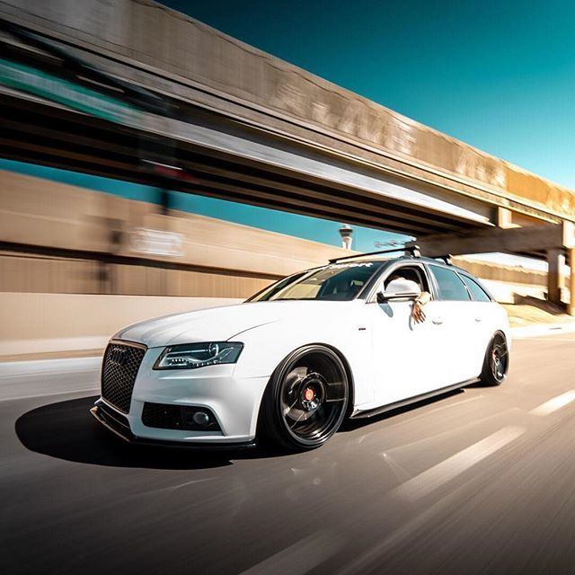
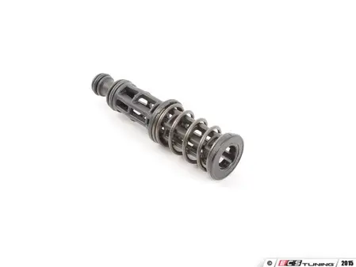
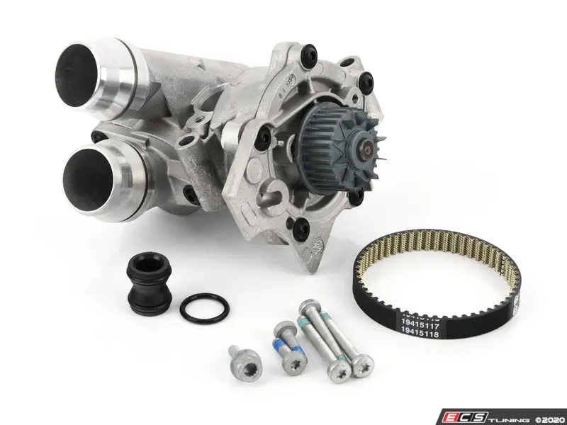

This page is dedicated to helping you keep your car running well so that you can be enjoying it rather than letting it sit and rot!
We want this!
Not this!
Maintanence Items
Oil is INCREDIBLY important for these cars! Make sure to use a VW 505.00 and 502.00 approved oil. Some examples are shown below!
Castrol Edge Euro
Liqui-Moly 5W-40

Mobil-1 5W-40 European

Valvoline 5W-40 European
The next important part that needs to be changed every 50,000 miles is the OIL FILTER RETAINING POST. It is vital for keeping oil pressure in the head of the engine! Here is what it looks like!
Here is where it is located! Under the oil filter!
Another common failure point is the PCV! It can cause a rough idle and check engine lights! Not to mention it can make the car run lean!
If you are chasing an oil leak or a vacuum leak, it could be your REAR MAIN SEAL! This is an upgraded one that is guaranteed to eliminate the issue!

Maybe the single most important part you can change on your car is the TIMING CHAINS, GUIDES, AND TENSIONERS! These fail often and cause catastrophic engine damage!
This is especially important if you have the old style tensioner shown below! Get it out of there!
Last but not least is the WATER PUMP! The factory puts polymer water pumps on and they are prone to failure! Use an aluminum one to eliminate future issues! And don't forget a new belt and union!
